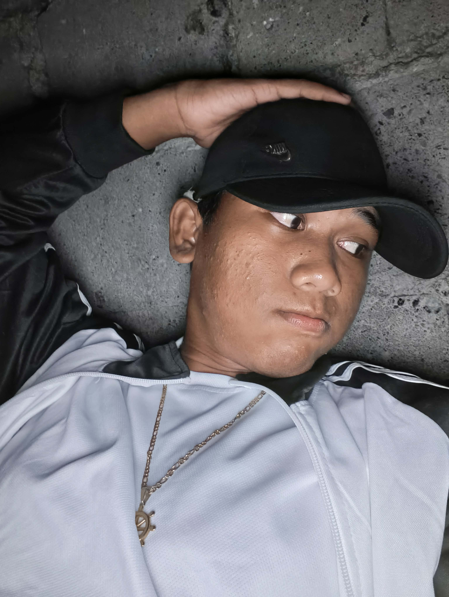

I am Jeremy Mayari, 18 years old, living in Sitio Lucban, Balibago, Lian, Batangas. I’m studying at Batangas State University and I’m a first-year BSIT student. I’m a quiet and shy person, and an overthinker, which is probably why it’s hard for me to make friends and why I only become close to a few people. I’m also the youngest in our family — I have 4 sisters and 2 half-brothers — but I’m not really close to my family. I’m happy when I’m with them, but sometimes it feels like I’m looking for something that I can’t explain.
I also have an aunt whom I call “Mamiee” because she’s like a mother to me, and she can fill the things I can’t explain. In short, they are like my second family, and I feel more comfortable when I’m with them. The happiness, care, and love they give make me stronger.